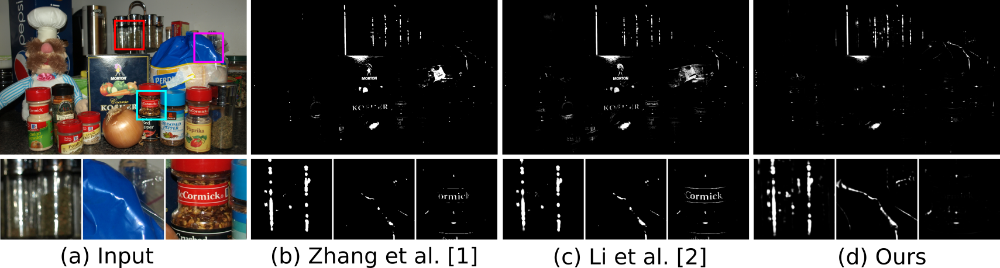
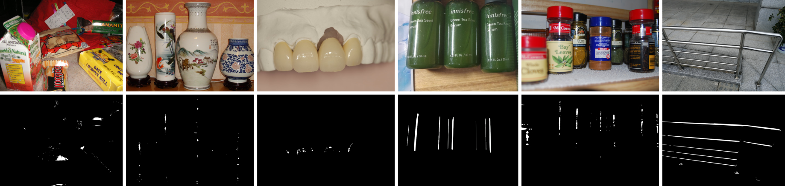

This is the project about our SHDNet.
Paper, Supplement, and Video
 Comparison with state-of-the-art highlight detection methods on an example image with very bright texts and materials.
Learning to Detect Specular Highlights from Real-world Images
Gang Fu, Qing Zhang, QiFeng Lin, Lei Zhu, and Chunaxia Xiao
Specular highlight detection is a challenging problem, and has many applications such as shiny object detection and light source estimation. Although various highlight detection methods have been proposed, they fail to disambiguate bright material surfaces from highlights, and cannot handle non-white-balanced images. Moreover, at present, there is still no benchmark dataset for highlight detection. In this paper, we present a large-scale real-world highlight dataset containing a rich variety of material categories, with diverse highlight shapes and appearances, in which each image is with an annotated ground-truth mask. Based on the dataset, we develop a deep learning-based specular highlight detection network (SHDNet) leveraging multi-scale context contrasted features to accurately detect specular highlights of varying scales. In addition, we design a binary cross-entropy (BCE) loss and an intersection-over-union edge (IoUE) loss for our network. Compared with existing highlight detection methods, our method can accurately detect highlights of different sizes, while effectively excluding the non- highlight regions, such as bright materials, non-specular as well as colored lighting, and even light sources.
If you have any questions about this project, please contact me via Email: xyzgfu@gmail.com
 Example highlight images and corresponding highlight masks in our dataset. Please zoom in to view more details.
WHU-Specular is a large dataset of annotated specular highlight regions created from real-world images. It can be used for specular highlight detection task. It contains 4310 image pairs (specular images and corresponding highlight masks). We randomly selected 3,017 images as the training set, and other 1293 images as the testing set. Now, our full dataset is publicly available. You can download our dataset (size: 2G+) by Baidu Cloud (Link: https://pan.baidu.com/s/1UizWty88XNhdI3PSNm0B-Q password: t3ov) and Google Drive (Link: https://drive.google.com/file/d/1yLSBr5tfYL-u4RyStX1sPmrJGCVuo0GB/view?usp=sharing.
Statement. WHU-Specular dataset is intended only for research purposes and thus cannot be used commercially. Moreover, reference must be made to the following publication when the dataet is used in any academic and research reports.
text
@inproceedings{fu-2020-learn-detec,
author = {Fu, Gang and Zhang, Qing and Lin, Qifeng and Zhu, Lei and Xiao, Chunxia},
title = {Learning to Detect Specular Highlights from Real-world Images},
booktitle = {ACM Multimedia},
year = {2020},
pages = {1873--1881},
}
Note that the authors of the paper [2] have not released their code. Thus we have implemented their algorithm using Matlab ourselves. The code is in src/highlight_detection_tmi2019.
The code of [3] is available at the project website specularity-removal.
The code of [4] is available at the project website some_specular_detection_and_inapinting_methods_for_endoscope_image.
TODO … …
[1] Zhang, W., Zhao, X., Morvan, J., & Chen, L. (2018). Improving shadow suppression for illumination robust face recognition. IEEE Transactions on Pattern Analysis and Machine Intelligence, 41(3), 611–624.
[2] Li, R., Pan, J., Si, Y., Yan, B., Hu, Y., & Qin, H. (2019). Specular reflections removal for endoscopic image sequences with adaptive-rpca decomposition. IEEE Transactions on Medical Imaging, 39(2), 328–340.
[3] Tchoulack, S., Langlois, J. M. P., & Cheriet, F. (2008). A video stream processor for real-time detection and correction of specular reflections in endoscopic images. In , Joint International IEEE Northeast Workshop on Circuits and Systems and Taisa Conference.
[4] Meslouhi, O., Kardouchi, M., Allali, H., Gadi, T., & Benkaddour, Y. (2011). Automatic detection and inpainting of specular reflections for colposcopic images. Open Computer Science, 1(3), 341–354.
If you use our dataset, please cite the following paper:
text
@inproceedings{fu-2020-learn-detec,
author = {Fu, Gang and Zhang, Qing and Lin, Qifeng and Zhu, Lei and Xiao, Chunxia},
title = {Learning to Detect Specular Highlights from Real-world Images},
booktitle = {ACM Multimedia},
year = {2020},
pages = {1873--1881},
}